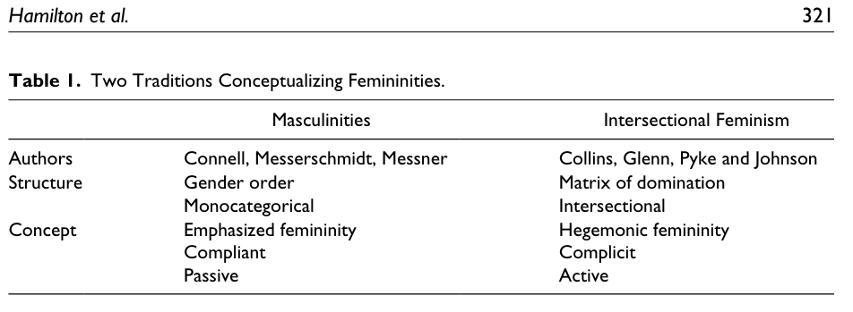

Sociología del Género
Clase 8: Feminidades y Masculinidades
SOL191 · Instituto de Sociología · PUC
Feminidades y Masculinidades
SOL191 · Clase 8: Feminidades y Masculinidades
Objetivos de hoy
- Revisar y evaluar diferentes definiciones teóricas de los conceptos de feminidades y masculinidades: masculinidad hegemónica, feminidad enfatizada, masculinidades híbrido y feminidades hegemónicas.
- Aplicar estos conceptos con ejemplos de estudios empíricos recientes.
- Analizar la “manosfera” como fenómeno contemporáneo y su relación con las crisis de masculinidad.
- Examinar la divergencia ideológica de género entre jóvenes en América Latina.
Wooclap: ¿Qué tan de acuerdo estás?
“Ser hombre hoy es más difícil que en el pasado”
Masculinidad hegemónica (según R. Connell)
- Vivimos en una sociedad que es “patriarcal”. Los hombres, como grupo, tienen poder sobre las mujeres, como grupo.
- Sin embargo, no todos los hombres están en el poder o se sienten poderosos. La masculinidad tiene su propia jerarquía.
- La masculinidad hegemónica es la forma de masculinidad más dominante y poderosa. Otros tipos de masculinidad incluyen la masculinidad gay o masculinidades racializadas (masculinidades subordinadas).
Masculinidad hegemónica (R. Connell)
- La masculinidad hegemónica (MH) es dominante sobre las masculinidades y feminidades subordinadas.
- MH es un tipo ideal o una fantasía que muy pocos hombres encarnan, pero que muchos luchan por alcanzar.
- El contenido varía en el tiempo y el espacio, pero actualmente en la sociedad occidental tiende a ser un hombre heterosexual, blanco, educado, rico y fuerte.
- El contenido es menos importante que la posición en la jerarquía. El contenido puede ir modificándose, como veremos en esta clase.

Repensando la MH: bloque híbrido y niveles (Connell y Messerschmidt 2005)
Bloque híbrido (Demetriou 2001)
- La MH no es un patrón puro: se apropia de lo que le sea útil de masculinidades subordinadas y marginadas (“hegemonía interna”).
- El resultado es un bloque hegemónico híbrido, capaz de reconfigurarse ante nuevas coyunturas históricas.
- Connell y Messerschmidt aceptan parte de la crítica, pero dudan que esa hibridación sea hegemónica más allá de lo local.
Tres niveles
- Local: familias, organizaciones, comunidades
- Regional: cultura o Estado-nación
- Global: política mundial, negocios y medios transnacionales
Los niveles se influyen mutuamente; el nivel global no determina mecánicamente al regional ni al local.
Pregunta: si la hegemonía siempre fue híbrida, ¿qué es lo que realmente cambia en “la masculinidad está cambiando”?
Video y discusión sobre masculinidades
¿Cómo aprenden los hombres qué emociones pueden expresar?
¿Qué sanciones sociales enfrentan cuando se alejan del ideal del «hombre de verdad»?
¿Basta con un cambio individual para transformar esas normas?
Feminidad enfatizada (R. Connell)
- No existe ninguna forma de feminidad que sea dominante. Más bien, las formas de feminidad son respuestas al dominio masculino.
- La feminidad enfatizada (FE), la forma más visible de feminidad, se organiza en torno al cumplimiento de la dominación masculina.
- Las FE incluyen rasgos y conductas que muestran dependencia de los hombres. ¿Ejemplos?
Crisis de masculinidad (Bridges y Pascoe 2018)
- Connell dice que las relaciones de género son históricamente inestables y tienden a entrar en crisis. Estas crisis afectan las relaciones de género de manera incompleta.
- Se han intensificado en la historia reciente, resultando en “una gran pérdida de legitimidad del patriarcado” y “diferentes grupos de hombres están negociando esta pérdida en formas muy diferentes”.
- Los periodos de cambio pueden venir con un vértigo de género, un sentido de malestar e incomodidad en la medida que las estructuras y relaciones de género se van transformando.
- Esta crisis no es “de” la masculinidad sino de las relaciones de género: el marco hegemónico pierde legitimidad pero no ha sido reemplazado.
La manosfera y las masculinidades online
La “crisis de conexión” masculina (Equimundo 2024)
Datos del informe State of American Men 2023
- 48% de hombres jóvenes (18-23) dice que su vida online es más interesante que la offline.
- 2/3 de hombres jóvenes sienten que “nadie los conoce realmente”.
- 40% de los hombres confían en una o más voces misóginas online.
- 44% de hombres reportó pensamientos suicidas en las últimas dos semanas.
- Hombres jóvenes enfrentan una combinación de soledad, confusión sobre qué significa “ser hombre”, inestabilidad económica y dificultades en relaciones.
- La manosfera ofrece respuestas simples a problemas complejos: roles claros, comunidad, sentido de propósito.
- 53% de los hombres cree que “hoy en día los hombres la tienen más difícil que las mujeres”.
¿Qué es la manosfera?
Una colección diversa de sitios web, blogs y foros online que promueven la masculinidad, la misoginia y la oposición al feminismo. Incluye:
- MRAs (Men’s Rights Activists): activistas por “derechos de los hombres”
- MGTOW (Men Going Their Own Way): hombres que rechazan relaciones con mujeres
- PUAs (Pick-Up Artists): artistas de la seducción
- TradCons: conservadores tradicionalistas
- Incels: célibes involuntarios
La “cadena” de la manosfera (Bates)
Los contenidos se mueven de los grupos más extremos hacia el mainstream, ganando un “barniz de normalización” en el camino. Cada comunidad interactúa con las adyacentes, manteniendo la movilidad de ideas pero aislando los eslabones más altos de la censura pública.
La fórmula de la manosfera
1. Validación emocional
Explotan la inseguridad masculina. Culpan a otros (feminismo, sociedad) y canalizan el resentimiento.
“Me enseñaron a ser femenino, pero las mujeres rechazan al nice guy”
2. Aspiraciones
Ofrecen modelos claros y un camino paso a paso: fitness, dinero, éxito sexual.
Escuelas online con suscripción ($199/mes) sobre “productividad” y “energía masculina”
3. Comunidad
Ofrecen pertenencia y accountability grupal. Métricas de progreso. Identidad compartida.
Grupos activos en redes sociales y membresías pagadas
Discusión en grupo
- ¿Cómo se podría responder a la “crisis de conexión” masculina sin reforzar la misoginia?
- ¿La manosfera crea el resentimiento o lo capta y lo monetiza? ¿Qué implica cada respuesta para posibles intervenciones?
Masculinidades híbrido (Bridges y Pascoe 2018)
- La masculinidad está cambiando. Pero si la MH fue siempre un bloque híbrido (Demetriou 2001), ¿cambia el mecanismo o solo los elementos que se incorporan?
- Masculinidades híbrido: la incorporación selectiva de elementos de identidad típicamente asociados con diversas masculinidades o feminidades marginadas y subordinadas en las expresiones e identidades de género de los hombres privilegiados.
- ¿Qué ejemplos de masculinidades híbrido dan en este artículo?
Consecuencias de las masculinidades híbrido
Distancia discursiva
- Hombres privilegiados se enmarcan fuera de la MH (“yo no soy machista”) sin renunciar a sus beneficios. El “machismo” se atribuye a hombres desaventajados.
Préstamo estratégico
- Apropiación lúdica de elementos de masculinidades subordinadas (“turismo simbólico”): disfrutar la transgresión sin pagar el costo.
- Ejemplo: hombre metrosexual que toma prestada la cultura gay.
Fortaleciendo límites
- Estos cambios fortalecen límites simbólicos entre grupos, escondiendo la desigualdad en formas novedosas.
- El “bromance” permite cercanía emocional entre hombres solo bajo la condición de que la heterosexualidad no se cuestione.
En conjunto: el cambio en las masculinidades puede servir para modernizar la hegemonía, no para eliminarla.
Feminidad hegemónica según Schippers (2007)
Schippers (2007)
- La feminidad hegemónica se define por su relación complementaria y jerárquica con la MH.
- Se sostiene conteniendo a las feminidades parias: feminidades no conformes que amenazan la relación entre MH y feminidad.
Hamilton et al. (2019)
- La feminidad hegemónica se define por la dominación interseccional de unas mujeres sobre otras (raza, clase, sexualidad).
Dos usos de la misma etiqueta: en Schippers, la feminidad hegemónica se define en relación con los hombres; en Hamilton et al., en relación con otras mujeres.
Video y discusión
¿Cómo se relacionan las expectativas presentadas en el video con la reproducción de desigualdades de género?
¿De qué manera las actrices deben demostrar que son suficientemente femeninas para obtener el papel?
Feminidades (Hamilton et al. 2019)
Cómo dos tradiciones sociológicas explican el rol de las feminidades en la dominación social
Connell y otros — Masculinidades
- Género como estructura de dominación independiente
- Feminidades complementan las masculinidades hegemónicas: cómplices pasivas en la reproducción de género.
- Feminidades enfatizadas: pasivo y mono categórico.
Hill Collins y otros — Dominación interseccional
- Ideas culturales de feminidad reproducen una matriz de dominación: ideas culturales de feminidad son racializadas, hetero-generizadas, de clase, etc.
- Todas las feminidades pueden ser subordinadas a las masculinidades hegemónicas, pero algunas feminidades juegan un rol poderoso en reproducir otras formas de desigualdad: dominación interseccional.


Feminidades hegemónicas
Ideales culturales de feminidad más celebrados en un momento y lugar determinados y que sirven para defender y legitimar todos los ejes de opresión en la matriz de dominación simultáneamente.
— Collins
Las feminidades hegemónicas pueden recibir ciertos “bonos” o “premios”. ¿Ejemplos?
Masculinidades hegemónicas en la clase dominante (Madrid 2016)
Estudia el proceso de construcción de masculinidades hegemónicas en la clase dominante chilena.
- ¿Qué hizo el autor en este estudio?
- ¿Cuáles son los tres tipos de colegios que identificó?
- ¿Cuáles son los principales resultados?
- ¿Cómo se podrían relacionar estos resultados con los conceptos de masculinidad hegemónica, masculinidades híbridas y masculinidades con perspectiva interseccional?
- Madrid no habla de las feminidades, menos de las feminidades hegemónicas y su relación con la clase social. ¿Cuál creen que es el rol de las feminidades en este estudio?
Divergencia ideológica de género
¿Se están separando políticamente los hombres y mujeres jóvenes?
Una nueva brecha global de género (Burn-Murdoch 2024)

Divergencia ideológica en América Latina (Argote 2026)
Datos y método
- LAPOP AmericasBarometer (2006-2023)
- 6 países: Argentina, Brasil, Chile, Colombia, México, Uruguay
- 71.228 observaciones
- Análisis por cohorte de nacimiento
Hallazgo central
Existe una clara brecha ideológica de género entre los jóvenes: mujeres nacidas después de 1980 se inclinan a la izquierda y hombres a la derecha. Esta divergencia está ausente en generaciones anteriores.
El puzzle
La brecha se da en las etiquetas ideológicas (izquierda-derecha) pero no en posiciones sustantivas. No hay divergencia en:
- Apoyo a reducir desigualdad
- Matrimonio igualitario
- Aborto
Las tendencias en estos temas son paralelas entre géneros.
¿Qué miden las “posiciones sustantivas”?
Lo que mide Argote (2026)
- Redistribución
- Matrimonio igualitario
- Aborto
Ninguno mide roles de género en la familia o el trabajo, que es donde la literatura ubica el estancamiento.
Lo que muestra la literatura
- Cotter, Hermsen y Vanneman (2011): en EEUU las actitudes de rol de género dejan de liberalizarse desde mediados de los 90. Lo explican por un “esencialismo igualitario”.
- Knight y Brinton (2017): no hay un solo continuo tradicional-igualitario; hay igualitarismo liberal, familista y flexible.
- Scarborough, Sin y Risman (2019): la ambivalencia como categoría propia.
- England (2010): cambio asimétrico, las mujeres entran a lo masculino y no al revés.
Implicancia: que no haya divergencia en esos tres temas no descarta divergencia en ideología de género. La “divergencia identitaria” podría ser en parte un efecto de medición.
¿Qué explica la brecha? (Argote 2026)
Lo que NO la explica
- ❌ Backlash cultural: los hombres jóvenes no son más conservadores en temas sociales que los mayores
- ❌ Educación: la brecha existe tanto en universitarios como en no-universitarios
- ❌ Retroceso económico: el enfriamiento en apoyo a redistribución es generacional y compartido
Lo que sugiere la evidencia
- ✓ Efecto de periodo post-2015, concentrado en los hombres
- ✓ Coincide con Ni Una Menos y Marea Verde
- ✓ Los hombres rechazan la identidad de izquierda — reaccionan contra lo que esa etiqueta representa
- ✓ Divergencia identitaria: clasificación en tribus opuestas por apego simbólico, no por desacuerdo en políticas
¿Identidad o condiciones materiales? Gidron y Hall (2017) proponen un mecanismo intermedio: el estatus social subjetivo. La ansiedad de estatus sería el factor próximo, y los cambios económicos y culturales se combinarían para producirla.
Datos electorales y actitudinales: la brecha se traduce en votos
Elecciones recientes (Argote 2026)
- Argentina 2023: entre 18-25 años, 56% hombres votaron por Milei vs. 34% mujeres (22 puntos de diferencia)
- Chile 2021: 68% mujeres sub-30 votaron por Boric. Brecha de participación: 63% mujeres vs. 47% hombres
- Brasil 2022: mujeres 16-29 apoyaron a Lula 58% vs. 44% de hombres jóvenes
Chile hoy (ICSO-UDP julio 2025)
- “Ser hombre hoy es más difícil”: hombres 54%, mujeres 38%; derecha 60%, izquierda 37%
- “Difícil saber cómo comportarse con mujeres por temor a ser malinterpretado”: hombres 68%, mujeres 52%
- Sin embargo: 79% apoya avances en derechos de las mujeres, 89% cree importante que hombres expresen emociones, 86% ve positivo postnatal masculino
Actividad en grupo: Brecha de género ideológica en América Latina
Grupos de 4-5 estudiantes. Revisen el material proporcionado y discutan:
Hallazgo principal: Argote (2026) encuentra una “divergencia identitaria” — hombres y mujeres jóvenes se identifican con tribus ideológicas opuestas pero no difieren en posiciones sustantivas (redistribución, matrimonio igualitario, aborto). ¿Cómo interpretan este resultado?
Contexto latinoamericano: A diferencia de EEUU/Europa, la educación universitaria no explica la brecha. ¿Por qué creen que el efecto de la universidad es diferente en América Latina?
Conexión con masculinidades: ¿Cómo se relaciona esta divergencia con los conceptos de masculinidad hegemónica, crisis de masculinidad y manosfera que vimos hoy? ¿Es la brecha una manifestación del “vértigo de género” de Bridges y Pascoe?
Experiencia propia: ¿Observan esta brecha en su generación en Chile? ¿En qué se manifiesta? ¿Qué rol juegan las redes sociales?
Recordatorios
SOL191 Sociología del Género · Clase 8